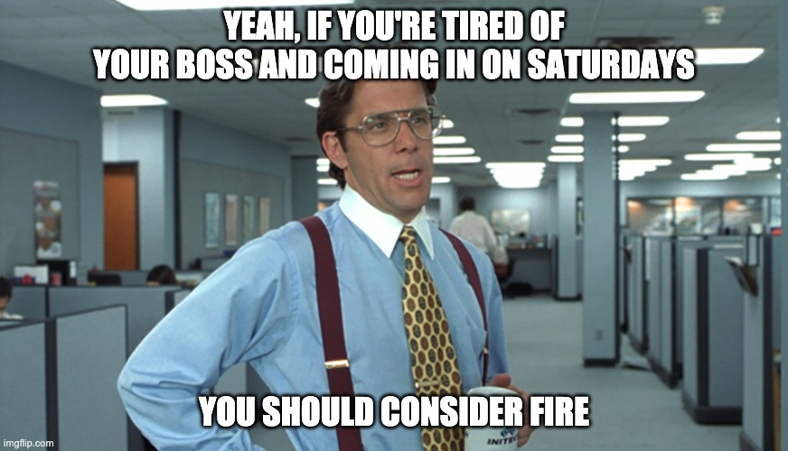

Created: 27 June 2020 / Finished: xx xx xxxx / Modified: xx xx xxxx
Financial independence / retire early (FIRE) is a relatively recent movement that promotes the concept of—you guessed it—being financially independent and being able to retire early, which is a natural byproduct of FI.
This essay will discuss and analyze FIRE in its entirety: FIRE motivators, the best methods of achieving FIRE, what do when you've made it, and others. See below for a full list of contents.
A few other notes:
The average, non-FIRE person spends around:
\[(40 - 50) \frac{\text{hr}}{\text{wk}} \times 50 \frac{\text{wk}}{\text{yr}} \times 40 \frac{\text{working yr}}{\text{life}} = (80000 - 100000) \frac{\text{hr}}{\text{life}}\]assuming an average job of 40-50 hours per week, 2 weeks of vacation per year, and 40 working years. The hours can vary wildly (some bankers can work upwards of 100 hours per week, while some lucky business owners only work a leisurely two hours per day), as can the vacation and number of working years.
Regardless, the primary motivator for FIREing seems to be simply getting time back to do what you want. Cutting the number of working years by 20 saves:
\[(40 - 50) \frac{\text{hr}}{\text{wk}} \times 50 \frac{\text{wk}}{\text{yr}} \times 20 \frac{\text{working yr}}{\text{life}} = (40000 - 50000) \frac{\text{hr}}{\text{life}}\]Think about all that can be done with the 40,000-50,000 hours of extra time in the 40-60 age range. Traveling around the country or world; catching up on books, video games, movies, or television shows; projects around the house; seeing old friends and family; spending time with children; volunteering in the community; pursuing hobbies; riding bikes on low-traffic trails; even nothing (although you don't need to FIRE for that, as Lawrence so sagely states). The list goes on and on and on. Every day is Saturday—no more having an alarm clock tell you when you need to get up to avoid having your boss get angry at you for being late. No more staring at the clock waiting for it to hit 5:00pm so you can leave and do things that interest you. No more waking up on Monday morning dreading week and same old meetings that happen week after week, month after month, year after year.
A sense of freedom accompanies the FI part of FIRE. Knowing you don't have to work is a liberating feeling and one that not many people get to experience. You can quit on your terms without fear of not being able to find another job or having to cut costs to make rent.
Despite all of these benefits, FIRE still poses issues to some, especially their relationships and purpose. [finish]
FIRE is both a general description of being financially independent and a specific tier in the FIRE world. Below are descriptions of the FIRE variants:
LeanFIRE is the variant for those wanting to FIRE as soon as possible. The amount of money saved is less than FIRE and significantly less than FatFIRE, but the retirement lifestyle is less lavish, decreasing retirement spending.
FIRE is the standard variant. Savings are in between LeanFIRE and FatFIRE, allowing for a more comfortable retirement.
FatFIRE is the high-end of FIRE. The savings are well into the millions of dollars, allowing a luxurious retirement full of travel, Michelin restaurants, and an unmatched sense of financial security.
FatFIRE is much less attainable than LeanFIRE or FIRE. The careers of people who FatFIRE or want to FatFIRE are quite similar in both position and status (manager, director, etc). Just based on the manual compilation of the Google Sheets document, being in one of the following career paths/industries is most effective, especially if management-level is achieved:
While the "Barista" part is substitutable with any part-time job, making this variant [part-time job]FIRE, it does a good job of explaining BaristaFIRE. Save enough money through full-time work that you need only to work a basic part-time job to continue living comfortably. Say your yearly spending is $40,000 and you have enough saved up to spend $30,000 per year for the rest of your life (more on how this $30,000 is calculated later). You still need $10,000 to cover your expenses, which is easily satisfied through a part-time job:
\[20 \frac{\text{hr}}{\text{wk}} \times 50 \frac{\text{wk}}{\text{yr}} \times (10-15) \frac{$}{\text{hr}} = (10000 - 15000) \frac{$}{\text{yr}}\]Depending on the wage, you may be able to work less ($15/hour = 13 hour/week to reach $10,000/year) or have more spending money every year.
CoastFIRE is similar to BaristaFIRE, but instead you use your investment returns and the principle of compounding interest to coast to FIRE.
| Variant | Annual Spending ($) |
|---|---|
| LeanFIRE | <40,000 |
| FIRE | 40,000-100,000 |
| FatFIRE | >100,000 |
| CoastFIRE | Varies |
| BaristaFIRE | Varies |
Deciding which variant you want to achieve depends on a few things:
After your variant has been chosen, you need to calculate your FIRE number, the amount of money you need to retire.
One of the best FIRE calculators out there is Engaging Data's FIRE Calculator. It takes into account:
The "Retirement Spending" field is where your chosen variant comes into play. Assuming everything is held equal with the initial values (age 32, $25,000 in current investments, etc), the following numbers are found for each variant:
| Retirement Spending ($) | FIRE Number ($) |
|---|---|
| 20,000 | 535,000 |
| 40,000 | 1,070,000 |
| 60,000 | 1,605,000 |
| 80,000 | 2,140,000 |
| 100,000 | 2,675,000 |
| 150,000 | 4,012,500 |